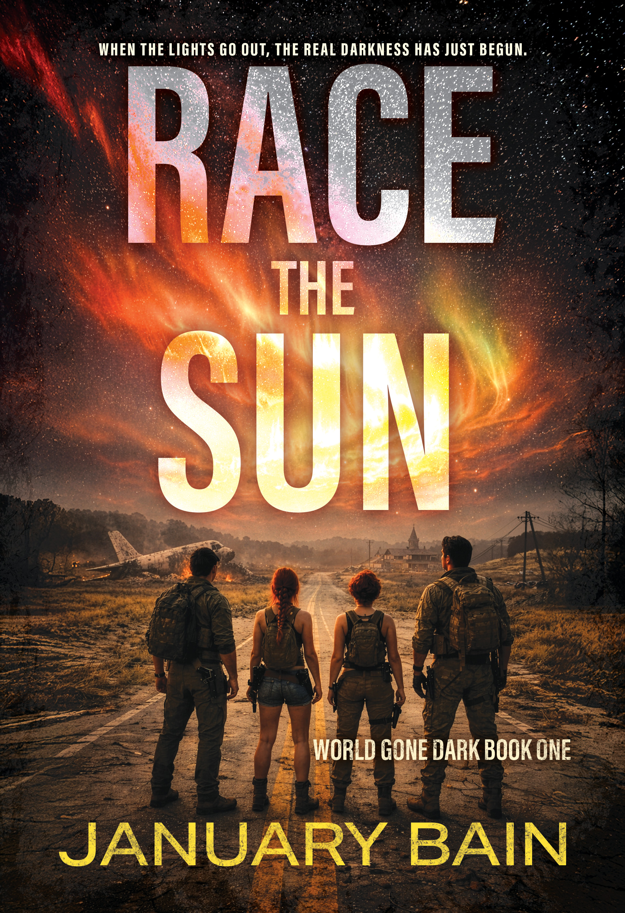
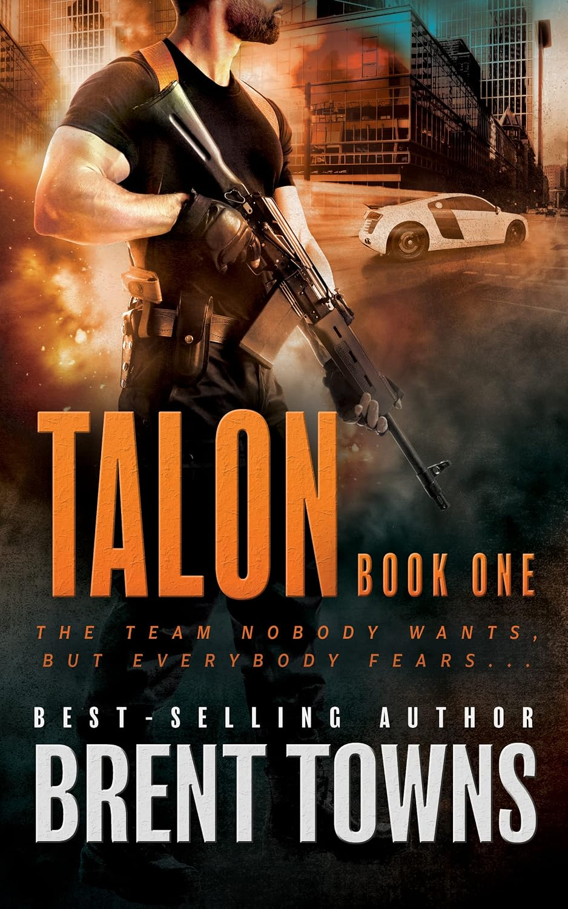

| View in browser |
 |
This Week's Thriller & Crime DealsHard-edged thrillers, crime stories, and danger that does not wait politely. |
Cole Springer Trilogyby W.L. Ripley
Ex-Secret Service agent Cole Springer trades his badge for a piano in Aspen, but danger keeps finding him. Across three men's adventure thrillers, his quick wit and con-man instincts draw gangsters, button men, and determined CBI agent Tobi Ryder into his schemes. $3.99 $0.99
Get It for $0.99 →
|
| |

Race the Sunby January Bain
A catastrophic solar storm wipes out power, communications, and supply chains, scattering the Mackenzie family across a collapsing America. Burgundy races to protect her diabetic sister while Auburn fights home from Los Angeles and Cormac struggles to escape death row. $3.49 $0.99
Get It for $0.99 →
|
| |

Talonby Brent Towns
Disgraced intelligence officer Anja Meyer and SAS reject Jacob Hawk lead an autonomous team against the global trafficking network known as Medusa. Backed by vast resources, the outcasts cross continents in a relentless military-action pursuit of justice and redemption. $2.99 $0.99
Get It for $0.99 →
|
|
Rough Edges Press 1707 E. Diana Street, Tampa, FL 33610 Website Unsubscribe |
|